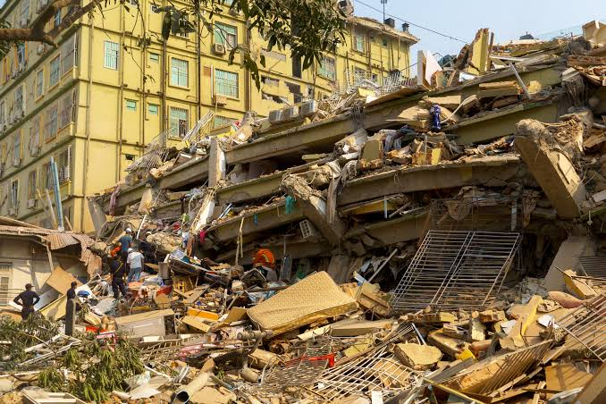

Check which places in Myanmar are exposed and what you can do. During an emergency, follow local warnings and instructions.

Earthquakes
Before
Reduce the risk of injury
Anchor tall cupboards and shelves securely. Keep heavy items on low shelves and move beds away from things that could fall.
Practise Drop, Cover and Hold On under a sturdy table. Agree on a place to meet after the shaking stops.
Plan with anyone who needs assistance. If you use a wheelchair, practise locking the wheels and protecting your head and neck.
During
Drop, Cover and Hold On
Indoors, drop to your hands and knees. Cover your head and neck under a sturdy table if one is nearby and hold on until the shaking stops. Without a table, get low away from windows and protect your head and neck with your arms.
Stay indoors until the shaking stops. Avoid doorways and lifts. If you’re already outside, move to an open area away from buildings, walls and power lines.
If you’re driving, pull over safely away from bridges and overhead wires. Set the parking brake and stay in the vehicle until shaking stops.
After
Watch for aftershocks
Check for injuries and get help if needed. Drop, Cover and Hold On again if you feel an aftershock.
Stay away from damaged buildings and fallen wires. If you suspect a gas leak, leave the area and report it from a safe place. Avoid flames and electrical switches near the leak.
Near the coast, move inland or uphill as soon as it is safe to move after strong or long shaking. On a beach or right by the water, move away from the shore after any felt earthquake.
Ask about landslides near your home, especially if you live on or below a steep slope. Plan a route away from the slope and any channel that could carry mud.
Get qualified advice before cutting into a hillside, removing vegetation or changing where runoff flows.
Watch for fresh ground cracks, leaning trees or new seepage during heavy rain. Plan transport and leave early if authorities advise it.
During
Stay out of the slide’s path
If you hear rumbling, see moving debris or notice a sudden change in a stream, leave immediately when there is a safe route. Do not cross moving mud or debris.
If debris is already hitting your building, avoid going outside into the slide. Move to a higher floor if you can safely do so.
If a road is blocked or damaged, turn back when it’s safe. Report the slide once you are out of danger.
After
Keep clear of unstable ground
Stay away from the slope, debris and damaged roads. More material may fall, and debris blocking a stream can cause flooding.
Call for trained help if someone is missing or injured. Stay out of unstable debris and report damaged utility lines.
Have a qualified professional assess affected slopes, retaining walls and buildings before repairs or re-entry.
Watch for new depressions, widening cracks or floors becoming uneven. Report suspicious changes to the property owner or local authority and get a qualified assessment.
Report suspected underground leaks to the utility provider. Leaking pipes can wash soil away and leave the ground unsupported.
Keep heavy loads and vehicles away from suspected unstable ground. Identify a safe exit route.
During
Move well away from the edge
If the ground collapses or starts moving, move away quickly by a safe route. Soil around the visible opening may also give way.
Warn others from a safe place. Keep children, pets and vehicles away. If a building is moving or cracking suddenly, leave by a safe exit.
Call local emergency services if someone is trapped. Stay clear of the opening and do not climb in to help.
After
Leave assessment and repair to specialists
Keep people away until the ground and any affected structures have been checked.
Contact utility providers if a pipe or cable may be damaged. Ask a qualified geologist or geotechnical engineer to investigate the cause.
Avoid filling the hole yourself. Wait for qualified advice on repair and when it is safe to return.
Find out whether your area has a tsunami evacuation map. Choose a route uphill or inland and a meeting place outside the hazard zone.
Practise the route and an alternative. Plan practical help for anyone who needs assistance getting out.
Learn the natural warnings. These include strong or long shaking, water suddenly withdrawing or rising, or an unusual roar from the sea.
During
Move inland or to higher ground
Protect yourself if the ground is still shaking. If you are in a low coastal area and notice a natural warning sign, evacuate as soon as it is safe to move. Do not wait for an official warning.
If you feel an earthquake on the beach or right by the water, leave the shore as soon as you can move safely, even if the shaking was brief.
Follow marked evacuation routes or local instructions. Keep away from beaches, harbours and river mouths. Leave belongings behind.
After
Wait for the official all-clear
Stay outside the hazard zone until local authorities say it is safe to return. Later waves and strong currents can still be dangerous.
Avoid damaged buildings and bridges, fallen power lines and floodwater.
Follow local updates for safe routes, shelter and drinking water. Let household members know where you are once you’re safe.
Choose a route to higher ground that avoids low roads, bridges and streams likely to flood. Follow local rain and flood alerts.
Keep important documents in waterproof storage above likely flood levels. Ask a qualified electrician about raising fixed electrical equipment where flooding is a recurring risk.
Arrange transport and evacuation support early. Leave promptly if authorities tell you to evacuate.
During
Avoid floodwater
Move to higher ground by a clear route. Never walk, swim or drive through floodwater, even when it looks shallow.
Keep away from fallen wires, flooded electrical equipment and damaged bridges.
If you are trapped in a building, move to the highest safe level. Avoid an enclosed attic where you could be trapped. Call for help and signal from a safe place.
After
Return and clean up safely
Wait until authorities say it is safe to return. Stay out of standing water and keep clear of damaged roads and buildings.
Leave wet electrical equipment switched off. Have it checked by a qualified electrician before using it again. If reaching the controls means entering water, stay away.
Follow local drinking-water advice. Throw away food that touched floodwater and wear waterproof gloves and boots when cleaning.